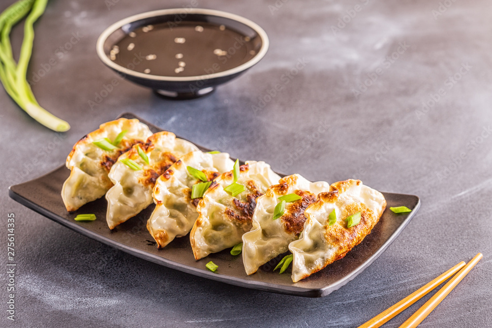
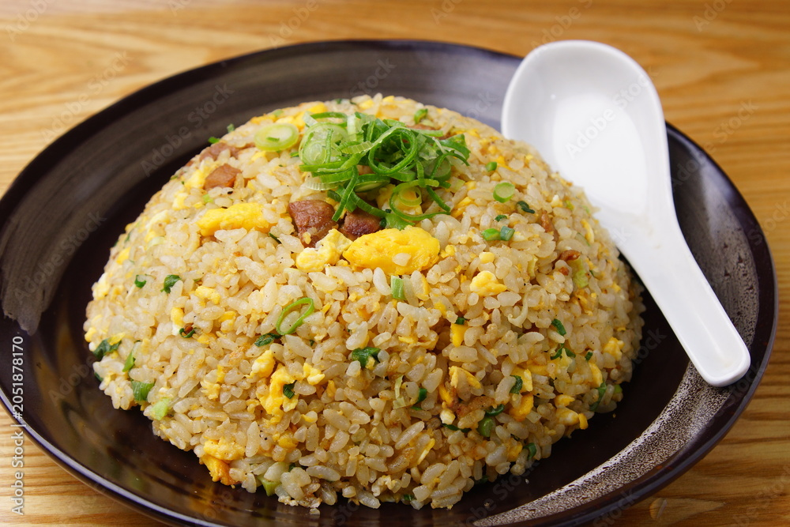
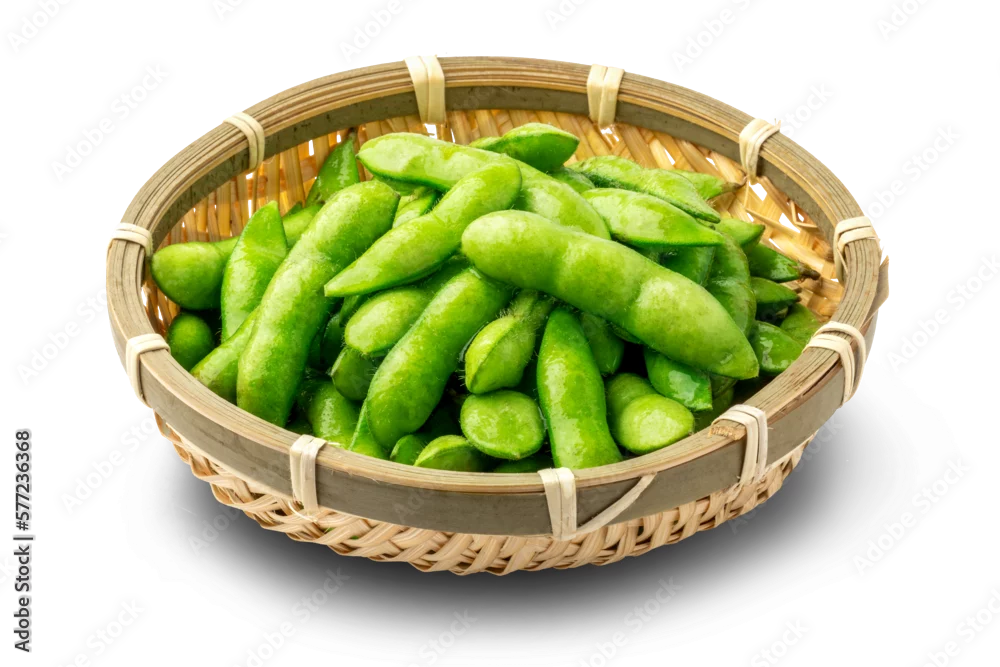

| Side Dish | Picture | Description | Price |
|---|---|---|---|
| Gyoza |  |
Delicious pan-fried dumplings filled with seasoned pork and vegetables. | $5.99 |
| Fried Rice |  |
A flavorful fried rice dish with vegetables, eggs, and your choice of protein. | $6.99 |
| Edamame |  |
Steamed young soybeans lightly salted, perfect as a healthy appetizer. | $4.99 |